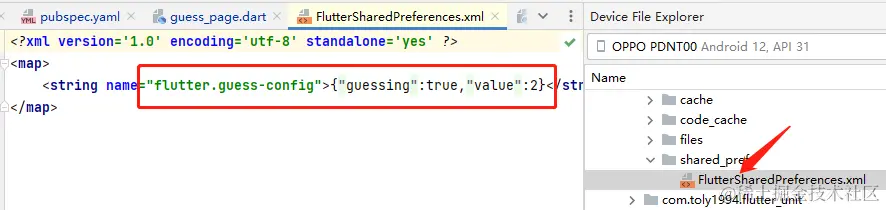
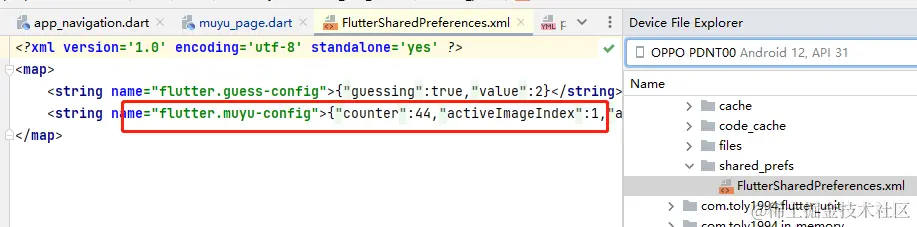
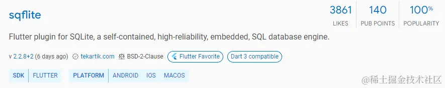
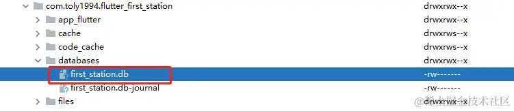
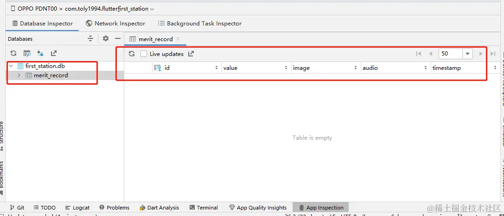
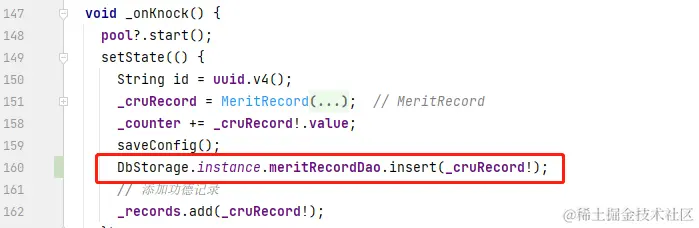
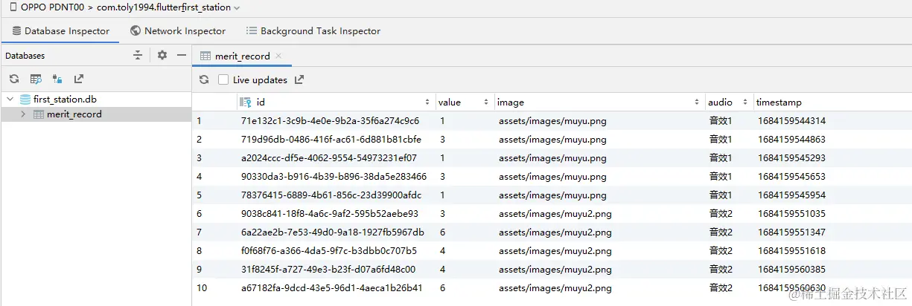

- 01 前言-教程内容导读.md.html
- 02 Flutter 开发环境的搭建.md.html
- 03 新手村基础 Dart 语法 (上).md.html
- 04 新手村基础 Dart 语法 (下).md.html
- 05 Flutter 计数器项目解读.md.html
- 06 猜数字界面交互与需求分析.md.html
- 07 使用组件构建静态界面.md.html
- 08 状态数据与界面更新.md.html
- 09 校验结果与提示信息.md.html
- 10 动画使用与状态周期.md.html
- 11 猜数字整理与总结.md.html
- 12 电子木鱼界面交互与需求分析.md.html
- 13 电子木鱼静态界面构建.md.html
- 14 计数变化与音效播放.md.html
- 15 弹出选项与切换状态.md.html
- 16 用滑动列表展示记录.md.html
- 17 电子木鱼整理与总结.md.html
- 18 白板绘制界面交互与需求分析.md.html
- 19 认识自定义绘制组件.md.html
- 20 通过手势在白板上绘制.md.html
- 21 白板画笔的参数设置.md.html
- 22 撤销功能与画板优化.md.html
- 23 应用界面整合.md.html
- 24 数据的持久化存储.md.html
- 25 网络数据的访问.md.html
- 26 教程总结与展望.md.html
- 捐赠
24 数据的持久化存储
一、猜数字项目的配置信息存储
在猜数字项目中，界面的状态数据有三个：
| 数据名 | 类型 | 含义 |
|---|---|---|
_guessing |
bool | 是否在猜数字游戏中 |
_value |
int | 待猜测的数字 |
_isBig |
bool? | 是否更大 |
现在的目的是，在退出应用后：可以继续上次的游戏进程，那么需要记录 _guessing 和 _value 两个数据。对于这种简单的配置数据，可以通过 shared_preferences 插件存储为 xml 配置文件。首先需要添加依赖：
dependencies:
...
shared_preferences: ^2.1.1
1. 单例模式访问对象和存储配置
数据的持久化中，我们需要在很多地方对数据进行读取和写入。这里将该功能封装为一个类进行操作，并提供唯一的静态对象，方便访问。 如下所示，创建一个 SpStorage 的类，私有化构造并提供实例对象的访问途径：
---->[lib/storage]----
class SpStorage {
SpStorage._(); // 私有化构造
static SpStorage? _storage;
// 提供实例对象的访问途径
static SpStorage get instance {
_storage = _storage ?? SpStorage._();
return _storage!;
}
}
2. 配置信息的存储
如下所示，在类中提供 saveGuessConfig 方法用于保存猜数字的配置信息。核心方法是使用 SharedPreferences 对象的 setString 方法，根据 key 值存储字符串。这里通过 json.encode 方法将 Map 对象编码成字符串：
const String kGuessSpKey = 'guess-config';
class SpStorage {
SpStorage._();
// 略同...
SharedPreferences? _sp;
Future<void> initSpWhenNull() async {
if (_sp != null) return;
_sp = _sp ?? await SharedPreferences.getInstance();
}
Future<bool> saveGuess({
required bool guessing,
required int value,
}) async {
await initSpWhenNull();
String content = json.encode({'guessing': guessing, 'value': value});
return _sp!.setString(kGuessSpKey, content);
}
}
由于 SpStorage 提供了静态的单例对象，所以在任何类中都可以通过 SpStorage.instance 得到实例对象。比如下面在 _GuessPageState 中生成随机数时，调用 saveGuessConfig 方法来存储记录，在如下文件中可以看到存储的配置信息：
/data/data/com.toly1994.flutter_first_station/shared_prefs/FlutterSharedPreferences.xml

---->[_GuessPageState#_generateRandomValue]----
void _generateRandomValue() {
setState(() {
_guessing = true;
_value = _random.nextInt(100);
SpStorage.instance.saveGuessConfig(guessing: _guessing,value: _value);
print(_value);
});
}
3. 访问配置与恢复状态
光存储起来，只完成了一半，还需要读取配置，并根据配置来设置猜数字的状态数据。如下所示，在 SpStorage 类中提供 readGuessConfig 方法用于读取猜数字的配置信息。核心方法是使用 SharedPreferences 对象的 getString 方法，根据 key 值获取存储的字符串。这里通过 json.decode 方法将字符串解码成 Map 对象：
class SpStorage {
// 略同...
Future<Map<String,dynamic>> readGuessConfig() async {
await initSpWhenNull();
String content = _sp!.getString(kGuessSpKey)??"{}";
return json.decode(content);
}
}
方便起见，这里在 _GuessPageState 的 initState 中读取配置文件，并为状态类赋值，完成存储数据的回显。在实际项目中，这些配置信息可以在闪屏页中提前读取。
class _GuessPageState extends State<GuessPage> with SingleTickerProviderStateMixin,AutomaticKeepAliveClientMixin{
@override
void initState() {
// 略...
_initConfig();
}
void _initConfig() async{
Map<String,dynamic> config = await SpStorage.instance.readGuessConfig();
_guessing = config['guessing']??false;
_value = config['value']??0;
setState(() {
});
}
这样，在生成数字之后，杀死应用，然后打开应用，就可以看到仍会恢复到之前的猜数字状态中，这就是数据持久化的意义所在。当前代码位置: sp_storage.dart
二、电子木鱼项目的配置信息存储
在电子木鱼项目中，需要存储的配置数据有：
| 数据名 | 类型 | 含义 |
|---|---|---|
| counter | int | 功德总数 |
| activeImageIndex | int | 激活图片索引 |
| activeAudioIndex | int | 激活音频索引 |
1. 配置信息的存储
同样，在 SpStorage 中定义 saveMuYUConfig 方法存储木鱼配置的信息。通过 SpStorage 统一对配置信息进行操作，一方面可以集中配置读写的代码逻辑，方便使用，另一方面可以避免在每个状态类内部都获取 SharedPreferences 对象进行操作。
const String kMuYUSpKey = 'muyu-config';
class SpStorage {
// 略...
Future<bool> saveMuYUConfig({
required int counter,
required int activeImageIndex,
required int activeAudioIndex,
}) async {
await initSpWhenNull();
String content = json.encode({
'counter': counter,
'activeImageIndex': activeImageIndex,
'activeAudioIndex': activeAudioIndex,
});
return _sp!.setString(kMuYUSpKey, content);
}
}
然后需要在配置数据发生变化的事件中保存配置，也就是在 _MuyuPageState 类中敲击木鱼、选择音频，选择图片三个场景，这三处的代码位置大家应该非常清楚。为了方便调用，这里写一个 saveConfig 方法来触发。然后操作界面，配置文件中就会存储对应的信息：

--->[_MuyuPageState]---
void saveConfig() {
SpStorage.instance.saveMuYUConfig(
counter: _counter,
activeImageIndex: activeAudioIndex,
activeAudioIndex: _activeAudioIndex,
);
}
2. 配置信息的读取
同理，在 SpStorage 中读取配置信息：
class SpStorage {
// 略同...
Future<Map<String, dynamic>> readMuYUConfig() async {
await initSpWhenNull();
String content = _sp!.getString(kMuYUSpKey) ?? "{}";
return json.decode(content);
}
}
并在 _MuyuPageState 初始化状态回调中，读取配置对状态数据进行设置。
class _MuyuPageState extends State<MuyuPage>
with AutomaticKeepAliveClientMixin {
// 略同...
@override
void initState() {
super.initState();
_initAudioPool();
_initConfig();
}
void _initConfig() async{
Map<String,dynamic> config = await SpStorage.instance.readMuYUConfig();
_counter = config['counter']??0;
_activeImageIndex = config['activeImageIndex']??0;
_activeAudioIndex = config['activeAudioIndex']??0;
setState(() {
});
}
这样，电子木鱼的配置信息就存储和读取的功能就实现完毕了，当前代码位置: sp_storage.dart
小练习：自己尝试完成白板绘制中颜色、线宽配置的数据持久化。
三、通过数据库进行存储
上面属于通过文件的方式来持久化数据，比较适合存储一些小的配置数据。如果想存储大量的数据，并且希望可以进行复杂的查询，最好使用数据库来存储。这里将对木鱼点击时的功德数记录，使用 sqlite 数据库进行存储。不过不会介绍的太深，会创建数据库和表，存储数据、读取数据即可。毕竟数据库的操作是另一门学问，感兴趣的可以系统地学习一下。
1. sqlite 数据库插件
目前来说，最完善的 sqlite 数据库插件是 sqlite , 使用前首先需要添加依赖：
dependencies:
...
sqflite: ^2.2.8+2

对于数据库操作来说，全局提供一个访问对象即可，也可以通过单例模式来处理，如下定义 DbStorage 类：
---->[storage/db_storage/db_storage.dart]----
class DbStorage {
DbStorage._();
static DbStorage? _storage;
static DbStorage get instance {
_storage = _storage ?? DbStorage._();
return _storage!;
}
}
2. 数据库操作对象 Dao
由于应用程序中可能存在多个数据表，一般每个表会通过一个类来单独操作。比如电子木鱼中的功德记录，是对一条条的 MeritRecord 对象进行记录，这里通过 MeritRecordDao 进行维护。在其构造函数中传入 Database 对象，以便在方法中操作数据库。
首先是数据库的创建语句，通过下面的 createTable 方法完成；使用 Database 的 execute 方法执行 sql 语句：
---->[storage/db_storage/dao/merit_record_dao.dart]----
import 'package:sqflite/sqflite.dart';
class MeritRecordDao {
final Database database;
MeritRecordDao(this.database);
static String tableName = 'merit_record';
static String tableSql = """
CREATE TABLE $tableName (
id VARCHAR(64) PRIMARY KEY,
value INTEGER,
image TEXT,
audio TEXT,
timestamp INTEGER
)""";
static Future<void> createTable(Database db) async{
return db.execute(tableSql);
}
}
然后在 DbStorage 中提供 open 方法打开数据库，如果数据库不存在的话 openDatabase 方法会创建数据库，并触发 _onCreate 回调。在其中可以使用 MeritRecordDao 执行数据表创建的逻辑。另外 DbStorage 持有 MeritRecordDao 类型对象，在数据库打开之后，初始化对象：
---->[storage/db_storage/db_storage.dart]----
class DbStorage {
//略同...
late Database _db;
late MeritRecordDao _meritRecordDao;
MeritRecordDao get meritRecordDao => _meritRecordDao;
void open() async {
String databasesPath = await getDatabasesPath();
String dbPath = path.join(databasesPath, 'first_station.db');
_db = await openDatabase(dbPath, version: 1, onCreate: _onCreate);
_meritRecordDao = MeritRecordDao(_db);
}
void _onCreate(Database db, int version) async {
await MeritRecordDao.createTable(db);
}
}
像打开数据库、加载本地资源的操作，在实际项目中可以放在闪屏页中处理。不过这里方便起见，直接程序开始时打开数据库。现在运行项目之后，就可以看到数据库已经创建了：

void main() async{
WidgetsFlutterBinding.ensureInitialized();
await DbStorage.instance.open(); // 打开数据库
runApp(const MyApp());
}
在 AndroidStudio 的 App inspection 中，可以查看当前运行项目在的数据库情况：

3. 数据的存储和读取方法
如下所示，在 MeritRecordDao 中定义 insert 方法插入记录数据；定义 query 方法读取记录列表。
class MeritRecordDao {
// 略同...
Future<int> insert(MeritRecord record) {
return database.insert(
tableName,
record.toJson(),
conflictAlgorithm: ConflictAlgorithm.replace,
);
}
Future<List<MeritRecord>> query() async {
List<Map<String, Object?>> data = await database.query(
tableName,
);
return data
.map((e) => MeritRecord(
e['id'].toString(),
e['timestamp'] as int,
e['value'] as int,
e['image'].toString(),
e['audio'].toString(),
))
.toList();
}
}
插入时需要传入 Map 对象，这里为 MeritRecord 类提供一个 toJson 的方法，以便将对象转为 Map :
class MeritRecord {
final String id;
final int timestamp;
final int value;
final String image;
final String audio;
MeritRecord(this.id, this.timestamp, this.value, this.image, this.audio);
Map<String, dynamic> toJson() => {
"id":id,
"timestamp": timestamp,
"value": value,
"image": image,
"audio": audio,
};
}
4.使用 Dao 完成数据读写功能
前面数据操作层准备完毕之后，使用起来就非常简单了。就剩两件事：
- 在
_MuyuPageState中点击时存入数据库。

- 在
_MuyuPageState中状态初始化时读取数据。
然后点击木鱼后就可以看到数据表中会存储对于的数据，应用退出之后也能从数据库中加载数据。

四、 本章小结
本章主要介绍使用 shared_preferences 通过 xml 存储配置数据；以及使用 sqflite 通过 sqlite3 数据库存储数据记录。其中也涉及了对单例模式的使用，让程序中只有一个数据的访问对象，一方面可以简化使用方式，另一方面也可以避免多次连接数据库，造成无意义的浪费。
到这里数据的本地持久化就介绍的差不多了，当前代码位置 db_storage.dart 。对于新手而言这算比较复杂的，希望大家可以好好消化。当然这些只是最简单的 Demo 级应用，怎么简单怎么来。对实际项目来说，整体的应用结构，数据维护和传递的方式，逻辑触发的时机都需要认真的考量，本教程只在新手的指引，就不展开介绍了。
© 2019 - 2023 Liangliang Lee. Powered by gin and hexo-theme-book.